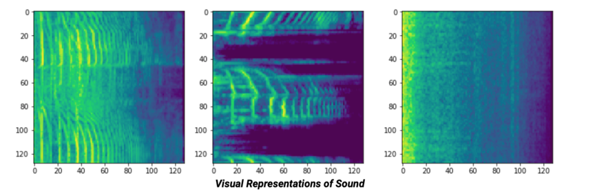

Speak a digit 1-9 with one second breaks in between
Watch the Operation Occur!
Note: Single Digit Operations are supported as of now
Results
Total: (Available After Operation Clicked)
Confidence: (Available After Operation Clicked)
How it Works
Overview: A model is pre-trained with audio samples of different words such as numbers in this program.
How Does the Classifier Actually Work: In reality the processing of training the model on sound is very similar to image classification! You may be wondering that sound and images are two seperate data formats/things in general. Well, the idea is the same for there is still a Convolutional neural network, but instead of labeling images, audio is being labeled with an optimal confidence score. Here is where is gets super cool now, that audio is being labeled as an image, for a sample of audio is taken, say from 0 seconds to 5 seconds, and is represented in a spectrogram format - a visual representation of the various frequencies. Using that image we have now of the spectrogram, we can now classify it in a very similar manner to classifying images using a CNN which extracts different data to train our model to recognize the pattern of matching certain frequencies to specific words like the number one.

What is the Confidence Level?: The confidence level represents how confident the trained model is on the prediction made. For example, say you say the number "three", it will classify the audio and predict three and have a confidence value.